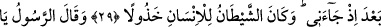
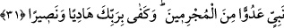

KEŞKE FALANCAYI
DOST EDİNMESEYDİM!
27. O gün, zâlim kimse (pişmanlıktan) ellerini ısırıp şöyle der: Keşke o
peygamberle birlikte bir yol tutsaydım!
28. Yazık bana! Keşke falancayı (bâtıl yolcusunu) dost edinmeseydim!
29. Çünkü zikir (Kur’an) bana gelmişken o, hakîkaten beni ondan saptırdı.
Şeytan insanı (uçuruma sürükleyip sonra) yüzüstü bırakıp rezil rüsvay eder.
30. Peygamber der ki: Ey Rabbim! Kavmim bu Kur’an’ı büsbütün terk ettiler.
31. (Rasûlüm!) İşte biz böylece her peygamber için suçlulardan düşmanlar peydâ
ettik. Hidâyet verici ve yardımcı olarak Rabbin yeter.
“O gün, zâlim kimse (pişmanlıktan) ellerini ısırıp şöyle der:”
“__WORD__ dişlerle bir şeyi ısırmak demektir. İki elini ısırmak pişmanlık sırasında böyle
yaparlar. “Parmaklarını ısırmak, parmaklarını yemek, dişlerini yakmak ve benzeri
deyimler öfke ve pişmanlıktan kinâyedir. Çünkü bu tür davranışlar öfke ve pişmanlık
sonucudur. el-Kevâşî’de der ki: “Isırmak fiili ile gerçekten ısırmak ve yemek
kasdedilmiş olabilir. Rivâyet edildiğine göre zâlim ellerini dirseklerine kadar yer.
Sonra elleri yeniden zuhûr eder ve yine yer. Yaptığı aşırılık ve kusurlarına pişmanlıktan
dolayı ellerini her zuhûr edişinde yer.”
Yâni zâlimin hasretinin şiddetinden ellerini ısırdığı günü hatırla. Yâni şaşkınların
yaptığı gibi dişleriyle elini ısırır.
Âyetteki zâlim kelimesi cins isim olup Ukbe b. Ebî Muayt da buna dâhildir. Çünkü
Ukbe her yolculuktan gelişinde bir yemekli toplantı düzenler ve Mekkelilerden dilediği
kimseleri yemeğe çağırırdı. Rasûlullah (s.a.) ile çok oturur ve O’nun sözlerini
beğenirdi. Bir gün yine seferden dönünce ziyâfet düzenledi ve Rasûlullah (s.a.)’ı da
yemeğe dâvet etti. Rasûlullah (s.a.) da bu dâvete katıldı. Ukbe, Rasûlullah (s.a.)’e
yemeği sununca yemekten imtina etti ve “Allah’tan başka ilâh olmadığına ve benim